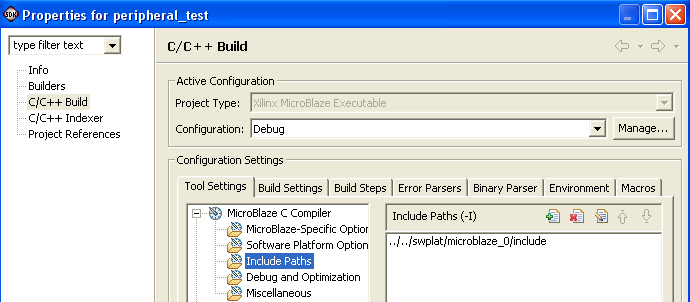
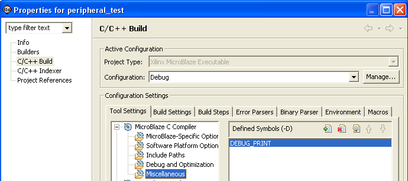
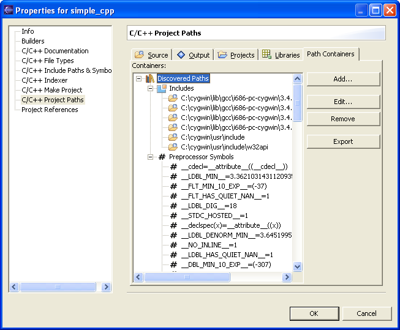
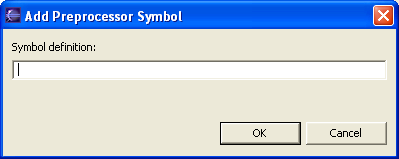
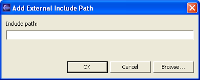
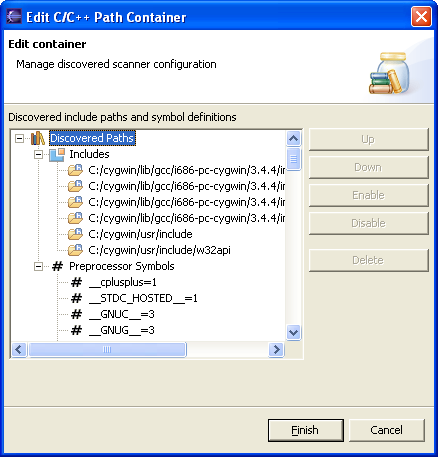

Adding Include paths and symbols
You can define include paths and preprocessor symbols for the parser. This
enables the parser to understand the contents of the C/C++ source code so that
you may more effectively use the search and code completion features.
If
Autodiscovery is enabled once a build has completed any discovered paths and
symbols will be displayed in the Discoverd Paths section. You can also define
the properties on a per project basis in the C/C++ Projects or Navigator
views.
For Managed Make projects:
- To set properties for your project right click your managed make
project and select Properties. Alternatively, to set properties for a
specific source file in your project right click a source file within your
standard make project and select Properties.
- Click C/C++ Build
- In Tools Settings tab select the Include Paths
to add the include
path
- You can add/remove/edit the include paths or move the
order of the include paths up or down using this option

- In Tools Settings tab select the Miscellaneous >
Defined Symbols to define compiler symbols

For Standard Make projects:
- To set properties for your project right click your standard make project
and select Properties. Alternatively, to set properties for a specific
source file in your project right click a source file within your standard
make project and select Properties.
- Click C/C++ Include Paths and Symbols.

- Select Add Preprocessor Symbol...

and enter your
symbol.
- Select Add External Include Path...

and enter your
path.
- Select the container and click Edit to change the order in which
your new path or symbol is used.

- Select the new object and click Up or Down to move it higher
or lower in the order, or you can disable it by clicking Disable.
- Click Finish to close the Edit Container window.
- Click OK to close the Preferences window.

Software Applications
Project file views

Working with C/C++ project
files
Copyright © 1995-2009 Xilinx, Inc. All rights reserved.